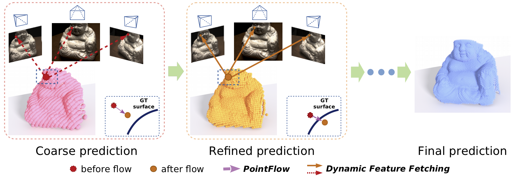

Rui Chen1,3* Songfang Han2,3* Jing Xu1 Hao Su3
(*: indicates joint first authors)
1Tsinghua University 2The Hong Kong University of Science and Technology
3University of California, San Diego
NEW [Aug, 2019] Paper gets accepted. Code and Data is released.
We introduce Point-MVSNet, a novel point-based deep framework for multi-view stereo (MVS). Distinct from existing cost volume approaches, our method directly processes the target scene as point clouds. More specifically, our method predicts the depth in a coarse-to-fine manner. We first generate a coarse depth map, convert it into a point cloud and refine the point cloud iteratively by estimating the residual between the depth of the current iteration and that of the ground truth. Our network leverages 3D geometry priors and 2D texture information jointly and effectively by fusing them into a feature-augmented point cloud, and processes the point cloud to estimate the 3D flow for each point. This point-based architecture allows higher accuracy, more computational efficiency and more flexibility than cost-volume-based counterparts. Experimental results show that our approach achieves a significant improvement in reconstruction quality compared with state-of-the-art methods on the DTU and the Tanks and Temples dataset.
Figure 1. Point-MVSNet performs multi-view stereo reconstruction in a coarse-to-fine fashion, learning to predict the 3D flow of each point to the groundtruth surface based on geometry priors and 2D image appearance cues dynamically fetched from multi-view images and regress accurate and dense point clouds iteratively. |
Figure 2. Network Architecture. Overview of Point-MVSNet architecture. A coarse depth map is first predicted with low GPU memory and computation cost and then unprojected to a point cloud along with hypothesized points. For each point, the feature is fetched from the multi-view image feature pyramid dynamically. The PointFlow module uses the feature augmented point cloud for depth residual prediction, and the depth map is refined iteratively. |
| MVSNet | Ours | Ground truth |
Figure 3. Qualitative results of scan9 of DTU dataset. Top: Whole point cloud. Bottom: Visualization of normals in zoomed local area. Our Point-MVSNet generates detailed point cloud with more high-frequency component than MVSNet. For fair comparison, the depth maps predicted by MVSNet are interpolated to the same resolution as our method. |
| Initial | Iter1 | Iter2 | Iter3 |
|
Figure 4. Qualitative results at different flow iterations. Top: Whole point cloud. Bottom: Zoomed local area. The generated point cloud becomes denser after each iteration, and more geometry details can be captured. |
We gratefully acknowledge the support of an NSF grant IIS-1764078, gifts from Qualcomm, Adobe and support from DMAI corporations.